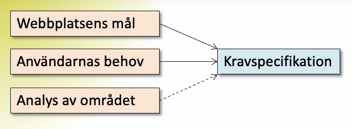

a)
User needs innebär att hitta målgruppen som webbsidan är menad för samt vad den målgruppen har för olika behov av webbplatsen. Man behöver även undersöka området som man ska skapa sin webbsida för och hur andra webbsidor har gjort. utifrån resultatet man får av user needs analysen så skapas en kravspecifikation av webbplatsen. Kravspecifikationen är ett visst antal krav som styr hur webbplatsen ska utformas samt vilka funktionerna den ska inneha
b)
För att formulera ett krav som är mätbart ska det vara ett objektivt krav som inte kan tolkas på olika sätt av olika inblandade parter. För samma anledning ska kravspecifikationen ska vara detaljerad och precis.